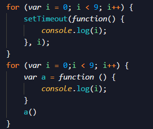

2018-6-25 10:26
Lemon:提问者

区别：第一种循环(简称a)：输出9个9 第二种循环(简称b):顺序输出0 -> 8
原理:a循环中在循环体中用了setTimeout语句，即延时函数执行，每次循环中的延时函数都会在一定时间内插入任务队列当中
如果任务队列中还有其他任务则先执行其他任务，最后执行延时函数
所以等到执行延时函数时，整个循环已经结束，执行环境也注销了，i已经是9了
所以这时候满足闭包的原理，延时函数定义在执行环境当中，当时执行却不在该执行环境
而且有权访问其父级的执行环境的活动对象，而该活动对象中的变量i只有1个就是9，所以会输出9个9；
原理:b循环在循环体中用了函数变量申明语句，并且立即执行，属于同步调用，每个函数都会同步输出当时i的值所以是顺序输出